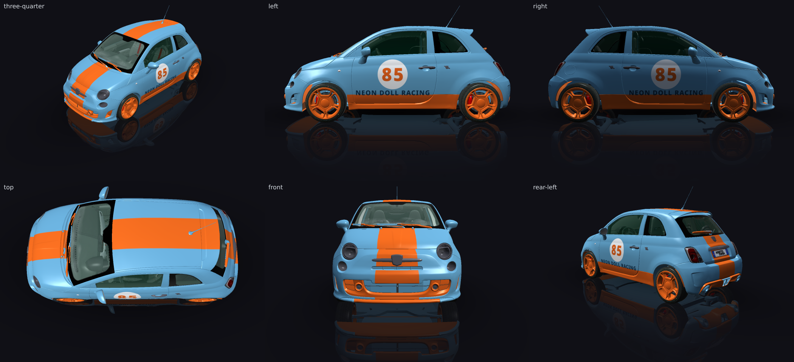
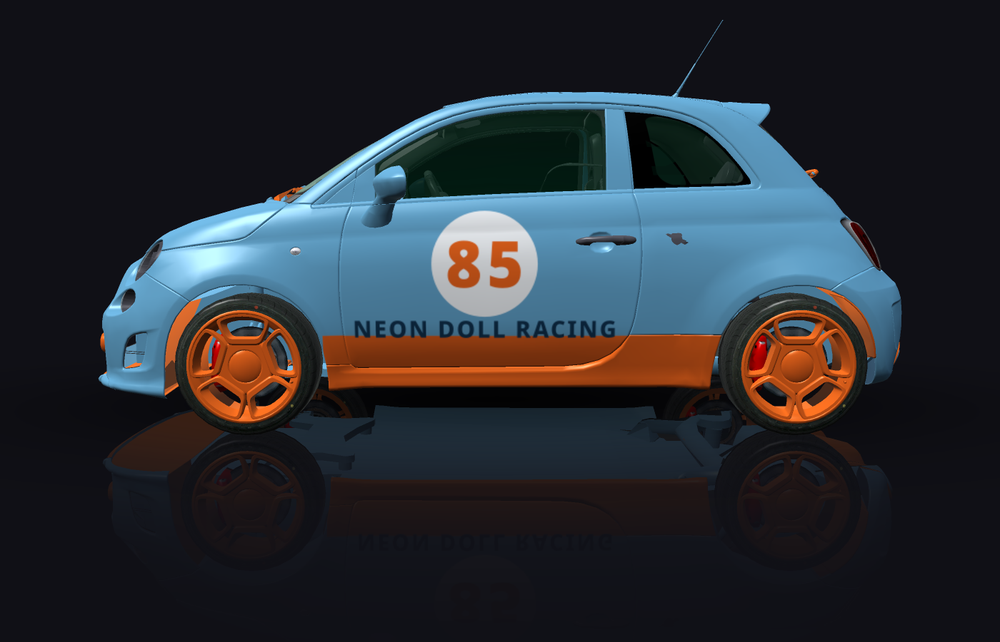
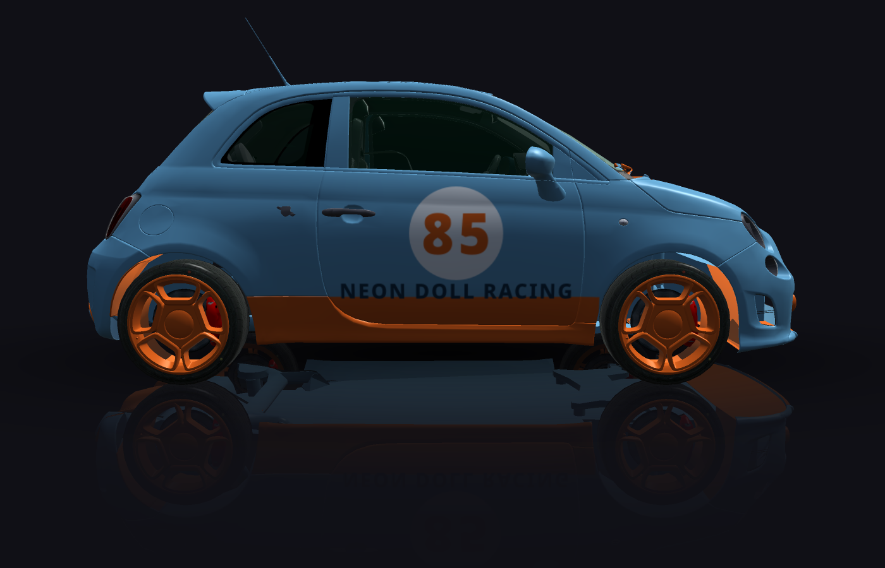
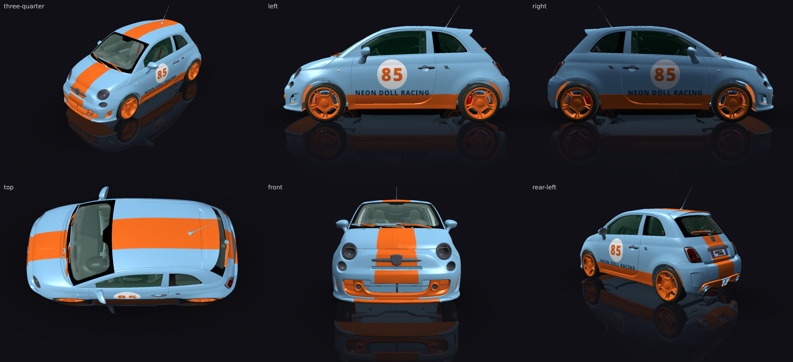

autolivery
Gulf-style, number 85, Neon Doll Racing, number readable from trackside. Use a white roundel with the number inside it, whole and fully visible, clear of every edge. An orange centre stripe runs the full length of the car, nose to tail, continuing over the rear wing.
passed in round 1 — in the editor's inbox, for a person to accept or discard
Round 2 (polish) — failed
render pass · fitment pass · critic fail · second look decided
Same design as round 1, with only the critic's note acted on: the base blue is deepened from #7BB3D9 to #5C9FC9 for a truer Gulf blue and stronger contrast with the orange stripe, kit and wheels. Everything else — the full-length orange centre stripe over nose, roof and tail, the orange ground-effect kit and rims, and the door groups (white roundel, orange 85, navy NEON DOLL RACING) — is unchanged. Fitment: no fatal or high findings.

critic
will not read
- NEON DOLL RACING text (left/right doors, below roundel; small navy-on-blue text with low contrast, will not read at trackside distance)
notes
- Team name text on doors is too small and low-contrast against the blue base to read from trackside; increase size or boost contrast (e.g. white or orange lettering).
second look, closer


will not read
- NEON DOLL RACING text (left/right doors, below roundel; small navy-on-blue text with low contrast against the medium blue base; will not read at trackside distance despite the darker blue)
answered false
notes
- Deepening the blue did not sufficiently raise contrast for the navy team name text on the doors (left/right views); consider a lighter or outlined typeface color to make it legible at distance.
5 low finding(s), which fail nothing
- outside-safe: 15% of centre-centre_nose_upper_2 is outside the readable part of centre_nose_upper_2, which measurement put at [0.005, 0.513, 0.018, 0.106]
- unmirrored: roundel-left is at [0.108, 0.345, 0.585, 0.349] and roundel-right at [0.308, 0.346, 0.585, 0.349]; a mirrored pair would put roundel-right at y 0.305
- unmirrored: number-left is at [0.171, 0.375, 0.461, 0.29] and number-right at [0.37, 0.375, 0.46, 0.289]; a mirrored pair would put number-right at y 0.335
- unmirrored: team-left is at [0.708, 0.089, 0.133, 0.863] and team-right at [0.16, 0.089, 0.133, 0.862]; a mirrored pair would put team-right at y 0.049
- stripe-across: centre-centre_tail_upper_4 is part of the stripe "centre", and which way it runs could not be checked: find_panels does not name both of centre_tail_upper_4's axes as one of along the car, across it, or up and down (y runs diagonally: 0.77 along the car and 0.63 up and down. Look at this panel with render_car before running a stripe on it.).
Round 1 — passed
render pass · fitment pass · critic pass
Gulf-style Abarth 500: powder-blue base with a 450 mm orange centre stripe running nose to tail (bonnet, roof, hatch, tail) as one constrained stripe, an orange ground-effect kit (front splitter, side skirts, rear valance) and orange wheels. Both doors carry the same group: a whole, fully visible white roundel with "85" in orange (196 mm capitals) and NEON DOLL RACING below in deep navy for contrast against the light blue (white lettering failed the 3:1 contrast check). Fitment: no fatal or high findings.

critic
notes
- Base colour is a fairly pale powder blue rather than the classic deeper Gulf blue, slightly softening the Gulf-style contrast, though it remains within acceptable range.
5 low finding(s), which fail nothing
- outside-safe: 15% of centre-centre_nose_upper_2 is outside the readable part of centre_nose_upper_2, which measurement put at [0.005, 0.513, 0.018, 0.106]
- unmirrored: roundel-left is at [0.108, 0.345, 0.585, 0.349] and roundel-right at [0.308, 0.346, 0.585, 0.349]; a mirrored pair would put roundel-right at y 0.305
- unmirrored: number-left is at [0.171, 0.375, 0.461, 0.29] and number-right at [0.37, 0.375, 0.46, 0.289]; a mirrored pair would put number-right at y 0.335
- unmirrored: team-left is at [0.708, 0.089, 0.133, 0.863] and team-right at [0.16, 0.089, 0.133, 0.862]; a mirrored pair would put team-right at y 0.049
- stripe-across: centre-centre_tail_upper_4 is part of the stripe "centre", and which way it runs could not be checked: find_panels does not name both of centre_tail_upper_4's axes as one of along the car, across it, or up and down (y runs diagonally: 0.77 along the car and 0.63 up and down. Look at this panel with render_car before running a stripe on it.).